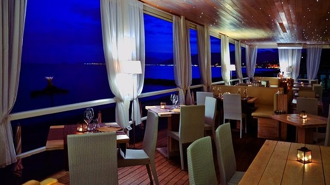
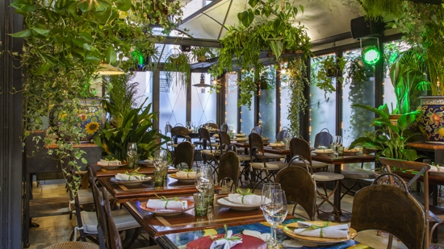

Preparati a vivere un'esperienza unica
Piatti preparati per te da alcuni dei migliori chef d'Italia!!
Ecco alcune delle nostre proposte

La Cascina
Se ti piace la cucina italiana, allora vale la pena provare questo posto.Famoso soprattutto per la sua ineguagliabile Carbonara,esso oltre che alla sua eleganza offre anche una spettacolare vista,favorita dalla presenza di un ampio e meraviglioso giardino dove potersi rilassare e godersi la serata in compagnia di un ottimo drink.

Nettuno
Il fascino di una cena assaporata all’imbrunire sulla spiaggia e l’atmosfera intima, sono solo alcune delle caratteristiche più affascinanti del Ristorante Nettuno.La spiaggia e il mare a due passi, sono la cornice di questo meraviglioso e rilassante luogo.Per non parlare dell'area Lounge Bar, un angolo elegante dove si propone una vasta scelta di drink e distillati.

Il Cigno
Il ristorante è situato sulle sponde del Lago Sirio tra Ivrea e Chiaverano, avvolto dal verde delle colline canavesane. Dispone di una saletta interna di 60 posti un dehor coperto di 40 posti ed un bellissimo terrazzo con vista panoramica sul lago con 80 posti tutti all’ombra dei tigli.

13 Giugno
In questo suggestivo ed esclusivo ristorante potrai assaporare squisite specialità marinare.Il locale appare molto comodo e accogliente grazie anche agli eleganti arredi degli anni 30,spicca sicuramente il pianoforte presente in sala per la musica dal vivo e soprattutto il fantastico giardino d'inverno.